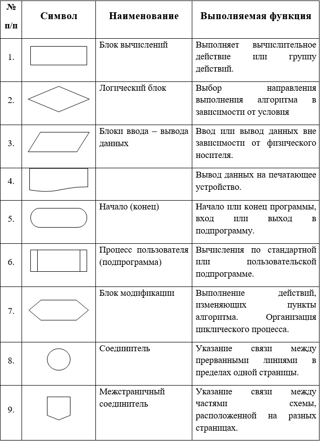
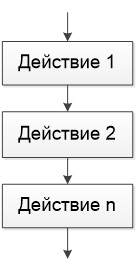
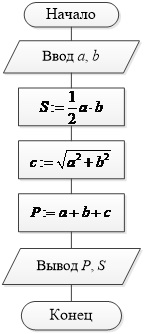
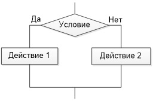
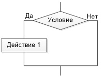
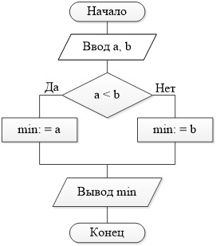
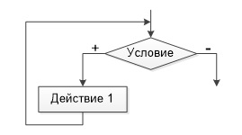
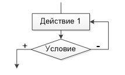
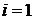
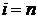

Основные элементы блок-схем
Блок-схема – это графический способ представления алгоритма, каждое действие при этом осуществляется рисованием последовательности геометрических фигур, каждая из которых подразумевает выполнение определенного действия алгоритма. Порядок выполнения действий указывается стрелками.
Основные элементы блок-схем
Правила построения блок-схем:
- Блок-схема выстраивается в одном направлении либо сверху вниз, либо слева направо.
- Все повороты соединительных линий выполняются под углом 90 градусов.
- Выходящая линия должна быть одна (исключение составляет логический блок).
Базовые структуры алгоритмов — это определенный набор блоков и стандартных способов их соединения для выполнения типичных последовательностей действий.
К основным алгоритмическим структурам относятся следующие:
· Линейные;
· Разветвляющиеся;
· Циклические.
Линейные алгоритмические структуры. Базовая структура «следование»
Линейными называются алгоритмы, действия в которых осуществляются последовательно друг за другом.

Базовая структура «следование»
Пример. Даны катеты прямоугольного треугольника. Вычислить его площадь и периметр.

Блок – схема алгоритма вычисления периметра и площади прямоугольного треугольника
Разветвляющиеся алгоритмические структуры. Базовая структура «ветвление»
Разветвляющимся называется алгоритм, в котором действие выполняется по одной из возможных ветвей решения задачи, в зависимости от выполнения условий. В отличие от линейных алгоритмов, в которых команды выполняются последовательно одна за другой, в разветвляющиеся алгоритмы входит условие, в зависимости от выполнения или невыполнения которого выполняется та или иная последовательность команд (действий).
В качестве условия в разветвляющемся алгоритме может быть использовано любое понятное исполнителю утверждение, которое может соблюдаться (быть истинно) или не соблюдаться (быть ложно). Такое утверждение может быть выражено как словами, так и формулой. Таким образом, алгоритм ветвления состоит из условия и двух последовательностей команд.
В зависимости от того, в обеих ветвях решения задачи находится последовательность команд или только в одной, разветвляющиеся алгоритмы делятся на полные и не полные (сокращенные).
Полная форма:
Базовая структура «ветвление» (полная форма)
Неполная форма:

Базовая структура «ветвление» (неполная форма)
Пример. Найти наименьшее из двух чисел.

Блок – схема алгоритма нахождения наименьшего из двух чисел
Циклические алгоритмические структуры.
Базовая структура «повторение (цикл)»
Циклическим называется алгоритм, в котором некоторая часть операций (тело цикла — последовательность команд) выполняется многократно. Однако слово «многократно» не значит «до бесконечности». Организация циклов, никогда не приводящая к остановке в выполнении алгоритма, является нарушением требования его результативности — получения результата за конечное число шагов.
Перед операцией цикла осуществляются операции присвоения начальных значений тем объектам, которые используются в теле цикла. В цикл, в качестве базовых, входят следующие структуры:
· Блок проверки условия;
· Блок, называемый телом цикла.
Существуют три типа циклов:
· Цикл с предусловием (Цикл «пока»);
· Цикл с постусловием (Цикл «до»);
· Цикл с параметром (разновидность цикла с предусловием).
Цикл с предусловием (Цикл «пока»)
Если тело цикла расположено после проверки условий, то может случиться, что при определенных условиях тело цикла не выполнится ни разу. Такой вариант организации цикла, управляемый предусловием, называется циклом c предусловием.

Базовая структура «повторение (цикл)». Цикл с предусловием
Переход к выполнению действия осуществляется только в том случае, если условие выполняется, в противном случае происходит выход из цикла.
Цикл с постусловием (Цикл «до»).
Возможен другой случай, когда тело цикла выполняется, по крайней мере, один раз и будет повторяться до тех пор, пока не станет ложным условие. Такая организация цикла, когда его тело расположено перед проверкой условия, носит название цикла с постусловием.

Базовая структура «повторение (цикл)». Цикл с постусловием
Исполнение цикла начинается с выполнения действия. Таким образом, тело цикла будет реализовано хотя бы один раз. После этого происходит проверка условия. Если условие не выполняется, то происходит возврат к выполнению действий. Если условие истинно, то осуществляется выход из цикла.
Цикл с параметром является разновидностью цикла с предусловием. Особенностью данного типа цикла является то, что в нем имеется параметр, начальное значение которого задается в заголовке цикла, там же задается условие продолжения цикла и закон изменения параметра цикла. Механизм работы полностью соответствует циклу с предусловием, за исключением того, что после выполнения тела цикла происходит изменение параметра по указанному закону и только потом переход на проверку условия.

Базовая структура «повторение (цикл)». Цикл с параметром
 - начальное значение параметра;
 - конечное значение параметра.
Для создания циклов с параметром необходимо использовать правила:
- Параметр цикла, его начальное и конечное значения и шаг должны быть одного типа;
- Запрещено изменять в теле цикла значения начальное, текущее и конечное для параметра;
- Запрещено входить в цикл, минуя блок модификации;
- Если начальное значение больше конечного, то шаг - число отрицательное;
- После выхода из цикла значение переменной параметра неопределенно и не может использоваться в дальнейших вычислениях;
- Из цикла можно выйти, не закончив его, тогда переменная параметр сохраняет свое последнее значение.
Инструкция